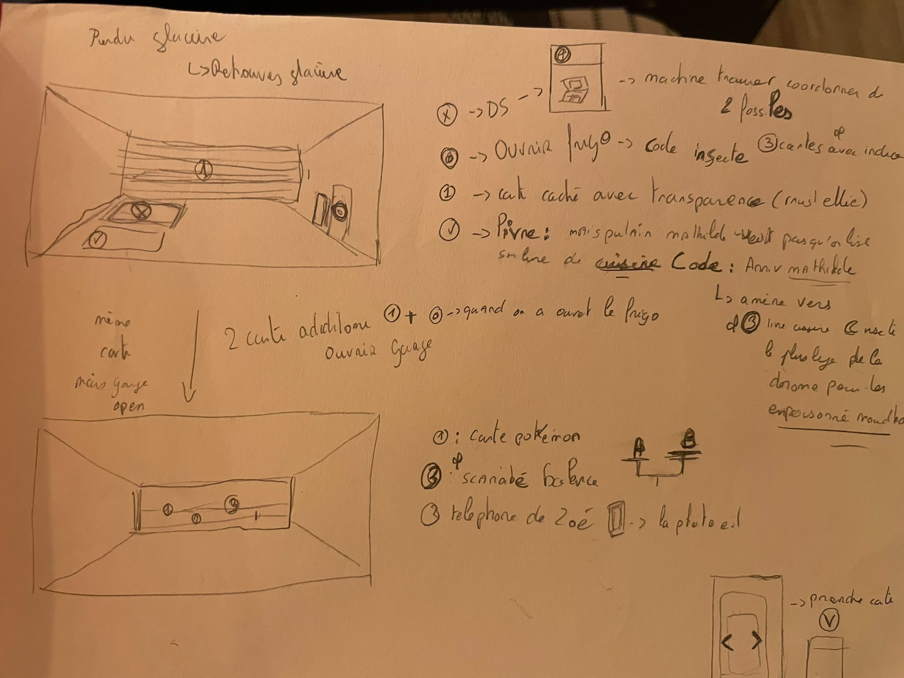
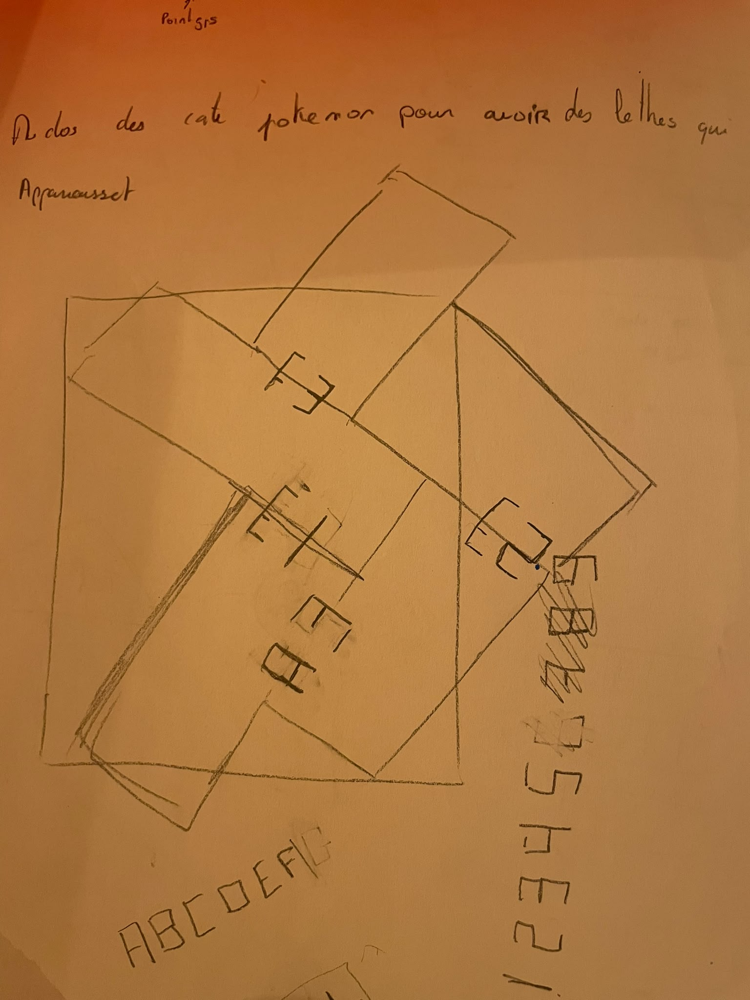

01 · Relier les idées
Dessiner le parcours avant de le faire jouer.
Sur mes feuilles, j’ai dessiné les scènes et noté les liens entre les cartes. J’ai aussi exploré des mécanismes sur papier, comme cette superposition de formes et de lettres.

